Rikuzentakata
Rikuzentakata · Iwate
Rikuzentakata
Highlighted on the Iwate map.
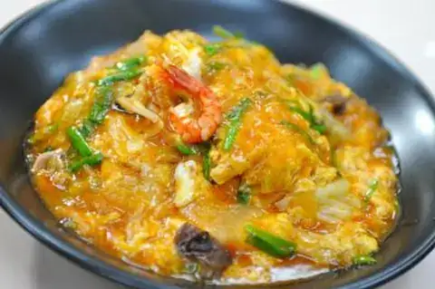
Stay
キャピタルホテル1000
Kyapitaruhoteru 1000
Hotel in Rikuzentakata, Iwate.
陸前高田 キャピタルホテル１０００
Rikuzentakata Kyapitaruhoteru 1 0 0 0
Hotel in Rikuzentakata, Iwate.
民宿吉田
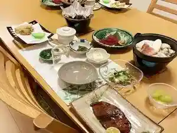
Minshuku Yoshida
Guesthouse (minshuku) in Rikuzentakata, Iwate.
民宿むさし
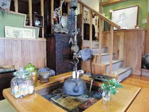
Minshuku Musashi
Guesthouse (minshuku) in Rikuzentakata, Iwate.
ホテル三陽
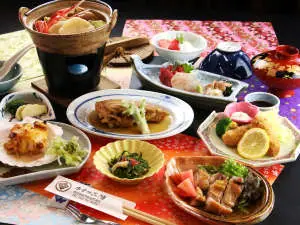
Hoteru Sanyou
Hotel in Rikuzentakata, Iwate.
Snow Peak 陸前高田キャンプフィールド
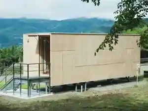
Snow Peak Rikuzentakata Kyanpufiirudo
Campsite lodging in Rikuzentakata, Iwate.
Dining
かき小屋 広田湾
Kaki Koya Hirota Wan
Seafood restaurant in Rikuzentakata, Iwate.
丼屋 さかぐち
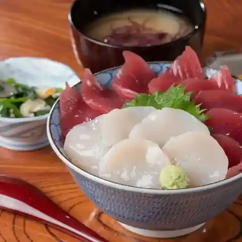
Donburi Ya Sakaguchi
Seafood-bowl restaurant in Rikuzentakata, Iwate.
中華食堂熊谷
Chuuka Shokudou Kumagaya
Chinese restaurant in Rikuzentakata, Iwate.
昇龍厨房 四海楼
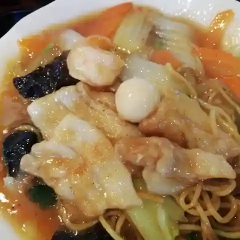
Noboru Ryuu Chuubou Shikai Rou
Chinese restaurant in Rikuzentakata, Iwate.
みつわ飯店
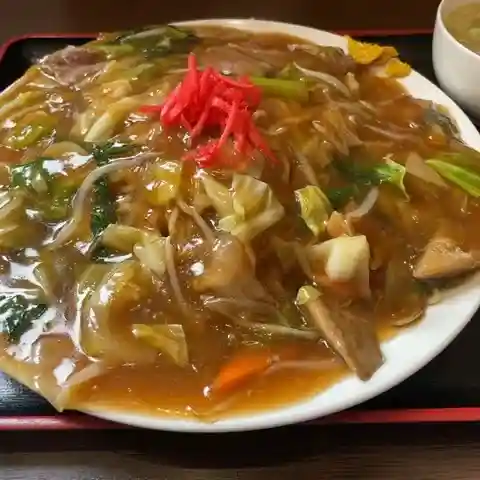
Mitsuwa Hanten
Chinese restaurant in Rikuzentakata, Iwate.
まつばら食堂
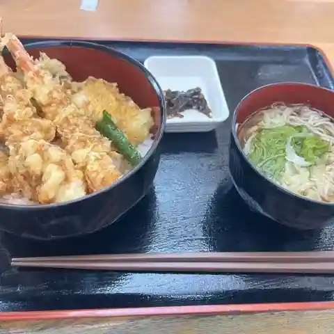
Matsubara Shokudou
Seafood restaurant in Rikuzentakata, Iwate.
たかたのごはん
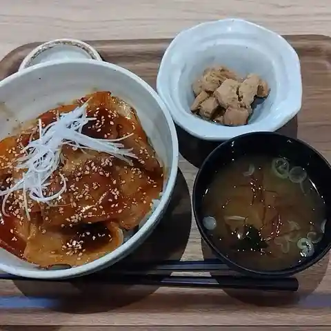
Takatanogohan
Shokudo diner in Rikuzentakata, Iwate.
旬味旬彩 鮨まつ田
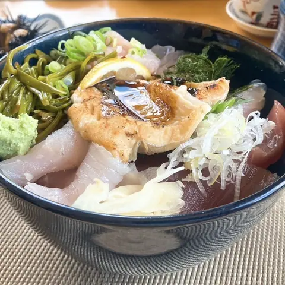
Jun Aji Jun Sai Sushi Matsu Ta
Sushi restaurant in Rikuzentakata, Iwate.
俺っ家
Ore Tsu Ie
Izakaya in Rikuzentakata, Iwate.
食堂かもん
Shokudou Kamon
Shokudo diner in Rikuzentakata, Iwate.
道の駅 高田松原
Michi No Eki Takada Matsubara
Roadside-station eatery in Rikuzentakata, Iwate.
やぶ屋
Yabu Ya
Shokudo diner in Rikuzentakata, Iwate.
拉麺 紺野屋
Raamen Konno Ya
Ramen shop in Rikuzentakata, Iwate.
BAKERY MAaLo
Bakery Maalo
Bakery in Rikuzentakata, Iwate.
おかし工房 木村屋
Okashi Koubou Kimura Ya
Cake shop in Rikuzentakata, Iwate.
クラフトビール醸造所 陸前高田マイクロブルワリー
Kurafutobiiru Jouzousho Rikuzentakata Maikuroburuwarii
Beer bar in Rikuzentakata, Iwate.
やぎさわカフェ アバッセ店
Yagisawa Kafe Abasse Mise
Café in Rikuzentakata, Iwate.
十割麺処なんばんや
Juu Wari Men Tokoro Nanbanya
Soba restaurant in Rikuzentakata, Iwate.
天然の湯 黒崎仙峡温泉 食堂 さんきょう
Tennen No Yu Kurosaki Sen Kyou Onsen Shokudou Sankyou
Shokudo diner in Rikuzentakata, Iwate.
鶴亀鮨
Tsurukame Sushi
Sushi restaurant in Rikuzentakata, Iwate.
陸前高田キャピタルホテル1000
Rikuzentakata Kyapitaruhoteru 1000
Hotel restaurant in Rikuzentakata, Iwate.
すなば珈琲 高田松原店
Sunaba Koohii Takada Matsubara Mise
Café in Rikuzentakata, Iwate.
Sights
Strawberry Park
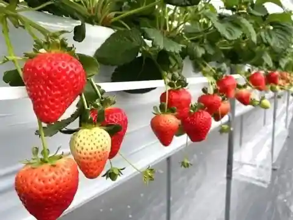
In 2021, a tourist farm has opened in Rikuzentakata City where you can enjoy a strawberry picking experience.
Daiwa Fruit Park Kesen
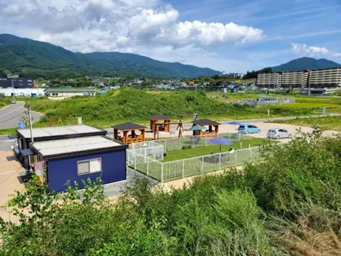
In addition to picking 600 blueberries from the farm, we also sell original products such as wine, juice, and honey made from blueberries harvested at the farm.
Rikuzentakata scallop and seaweed grilled shabu-shabu gozen (hotawaka gozen)
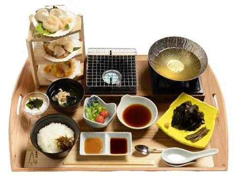
Iwate Prefecture's first new OMOTENASHI local gourmet dish, created to promote reconstruction from the earthquake disaster and revitalize the local community through food.
Rikuzentakata Fermentation Park CAMOCY
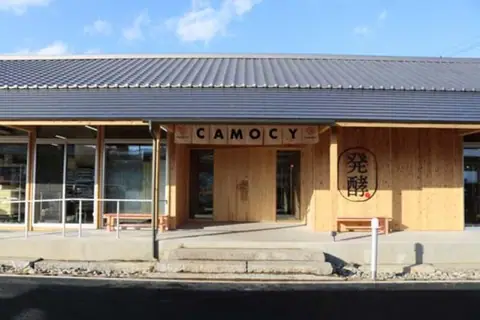
In the Imaizumi area of Rikuzentakata City, where the brewing industry has flourished since the Edo period, fermentation has been closely connected to the lives of the residents since ancient times.
Shikairou Chinese Restaurant
We have continued to provide the same taste since our founding, using a collagen-rich soup made with local chicken.
Oyster Hut Hirota Bay
In addition to steamed oysters, you can enjoy various dishes such as fried oysters and oyster gratin.
Kanda Grape Juice
"Grape juice" has been popular among locals since ancient times.
Tsubakishima Island
Aomatsushima and Tsubakijima are the beautiful islands at the tip of the Hirota Peninsula and the southernmost tip of Iwate Prefecture.
Rikuzentakata hand-baked rice crackers
Rikuzentakata hand-baked rice crackers were sold with the aim of becoming a new specialty of Rikuzentakata City.
Roadside station “Takada Matsubara”
It was closed due to the Great East Japan Earthquake and Tsunami, but it reopened on September 22, 2019.
Muscat Cider
When you think of Rikuzentakata's cider, this is it. We have been providing the same taste since we started manufacturing in 1971.
Toretate Land Takata Matsubara
Harutate Land Takada Matsubara, which was located near the coast, was completely washed away in the Great East Japan Earthquake, and the fields where crops were grown were also severely damaged.
Yacon Juice
Yacon is a healthy vegetable with a delicious rhizome that is native to South America and is rich in nutrients.
Rikuzentakata City Museum
Earthquake Related History and Heritage Facilities
Reconstruction and Town Planning Information Center
Reconstruction town development information center
Hirota Beach
One of the clearest beaches in the prefecture. It is loved mainly by local people.
Kurosaki Senkei
This is a typical scene of the Rias coast.
Takada Matsubara Beach
In 2021, the beach reopened for the first time in 11 years.
Snow Peak Rikuzentakata Campfield
Rikuzentakata Auto Campsite Mobilia, which had been closed since the Great East Japan Earthquake, reopened in September 2020 as Iwate Prefecture's first directly managed camp field and store, Snow Peak Rikuzentakata Camp Field.
Great East Japan Earthquake Tsunami Memorial Museum Iwate TSUNAMI Memorial
Great East Japan Earthquake Tsunami Memorial Museum Iwate TSUNAMI Memorial
Nesaki Hashigo Tiger Dance
It is a tiger dance that is performed on a ladder approximately 20 meters in length at an angle of approximately 50 degrees.The acrobatic dance has a strong appreciation element, and its official name is "Furyu Karashishikyokujo no Tai." In the ancient…
Horotai no Sato Charcoal House
Recommended for green tourists who love nature. It is a multi-purpose facility that can be used for experiential learning such as charcoal making, training, etc., and accommodation is also available.
Mt. Hikami
Located in the southeastern part of the Kitakami Mountains, this mountain has an altitude of 874.7m, with the southwestern foot of the mountain connecting to Hirota Bay, and the northeastern base leading to Ofunato Bay.
Takata Matsubara and the Miracle Lone Pine
Takada Matsubara and the miraculous single pine tree
Treasure Pine of Kezoji Temple
This is a 20m tall Japanese black pine located within the grounds of Kezoji Temple, and its flowering habits are opposite to those of other trees.
Jagasaki
A cliff-top cape at the eastern base of the Hirota Peninsula.